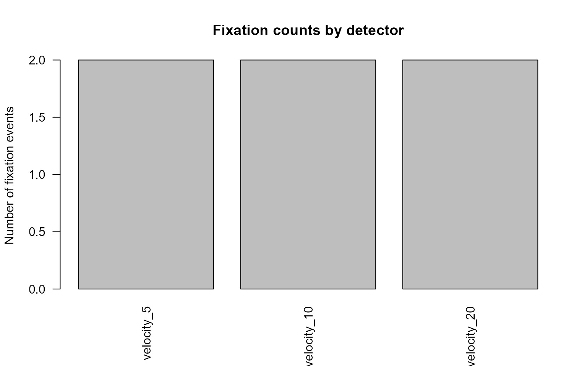
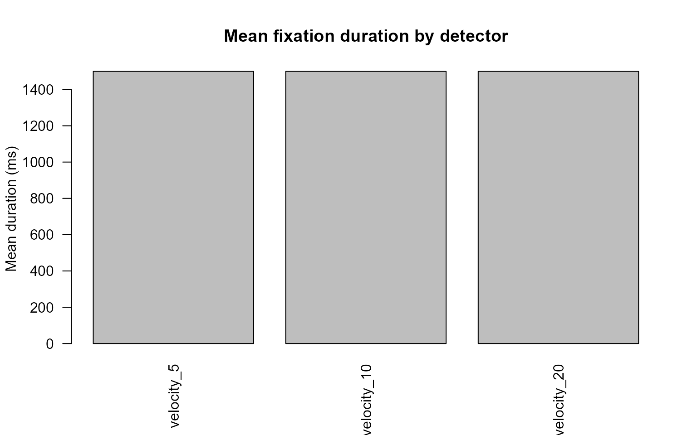
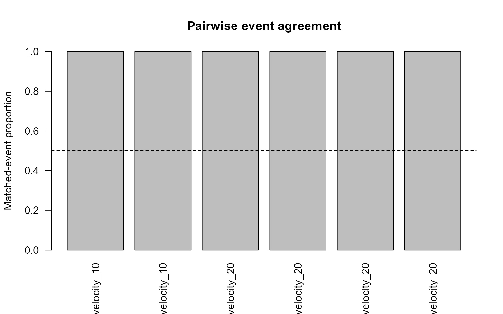

Event-detector comparison workflow
Source:vignettes/articles/event-detector-comparison.Rmd
event-detector-comparison.RmdScope
Different event detectors implement different definitions and
thresholds. compare_gazepoint_event_detectors() places
native velocity-threshold, lightweight HMM, and optional eyetools
outputs into a common event table.
Agreement indicates methodological convergence between detector definitions. It does not establish that one detector recovers a uniquely true cognitive event sequence.
Synthetic gaze trace
n <- 180L
gaze <- data.frame(
USER_ID = rep("P01", n),
trial = rep(c("T01", "T02"), each = n / 2),
TIME = seq(0, by = 1 / 60, length.out = n),
FPOGX = c(
rep(0.20, 55),
seq(0.20, 0.80, length.out = 10),
rep(0.80, 55),
seq(0.80, 0.35, length.out = 10),
rep(0.35, 50)
),
FPOGY = 0.50,
stringsAsFactors = FALSE
)
utils::head(gaze)
#> USER_ID trial TIME FPOGX FPOGY
#> 1 P01 T01 0.00000000 0.2 0.5
#> 2 P01 T01 0.01666667 0.2 0.5
#> 3 P01 T01 0.03333333 0.2 0.5
#> 4 P01 T01 0.05000000 0.2 0.5
#> 5 P01 T01 0.06666667 0.2 0.5
#> 6 P01 T01 0.08333333 0.2 0.5Compare velocity thresholds and the HMM branch
comparison <- compare_gazepoint_event_detectors(
data = gaze,
id_col = "USER_ID",
trial_col = "trial",
x_col = "FPOGX",
y_col = "FPOGY",
time_col = "TIME",
methods = c("velocity", "hmm"),
velocity_thresholds = c(5, 10, 20),
min_duration = 60,
hmm_states = 3,
min_overlap = 0.5
)
comparison$runs
#> detector family status n_events
#> 1 velocity_5 velocity ok 2
#> 2 velocity_10 velocity ok 2
#> 3 velocity_20 velocity ok 2
#> 4 hmm_3_states hmm error NA
#> message
#> 1 <NA>
#> 2 <NA>
#> 3 <NA>
#> 4 `HMM output` is missing required column(s): velocity.A detector branch that cannot be fitted is recorded in
runs while successful branches remain available for
review.
Detector-level summaries
comparison$detector_summary
#> detector family threshold n_fixations mean_duration_ms
#> 1 velocity_5 velocity 5 2 1500
#> 2 velocity_10 velocity 10 2 1500
#> 3 velocity_20 velocity 20 2 1500
#> median_duration_ms total_duration_ms
#> 1 1500 3000
#> 2 1500 3000
#> 3 1500 3000The summary reports fixation counts and duration distributions. Large differences indicate sensitivity to event-definition choices.
plot_gazepoint_event_detector_agreement(
comparison,
plot = "counts"
)
plot_gazepoint_event_detector_agreement(
comparison,
plot = "durations"
)
Pairwise interval agreement
comparison$pairwise_agreement
#> USER_ID trial detector_a detector_b n_a n_b matched_a matched_b agreement_a
#> 1 P01 T01 velocity_5 velocity_10 1 1 1 1 1
#> 2 P01 T02 velocity_5 velocity_10 1 1 1 1 1
#> 3 P01 T01 velocity_5 velocity_20 1 1 1 1 1
#> 4 P01 T02 velocity_5 velocity_20 1 1 1 1 1
#> 5 P01 T01 velocity_10 velocity_20 1 1 1 1 1
#> 6 P01 T02 velocity_10 velocity_20 1 1 1 1 1
#> agreement_b mean_best_overlap_a mean_best_overlap_b min_overlap
#> 1 1 1 1 0.5
#> 2 1 1 1 0.5
#> 3 1 1 1 0.5
#> 4 1 1 1 0.5
#> 5 1 1 1 0.5
#> 6 1 1 1 0.5Events are compared by interval intersection-over-union. The directional agreement columns distinguish the proportion of events from detector A that match detector B from the reverse comparison.
if (nrow(comparison$pairwise_agreement)) {
plot_gazepoint_event_detector_agreement(
comparison,
plot = "agreement"
)
}
Unmatched events
utils::head(comparison$unmatched_events)
#> # A tibble: 0 × 15
#> # ℹ 15 variables: USER_ID <chr>, trial <chr>, detector <chr>, family <chr>,
#> # threshold <dbl>, event_id <int>, start_time <dbl>, end_time <dbl>,
#> # duration_ms <dbl>, mean_x <dbl>, mean_y <dbl>, n_samples <int>,
#> # source_status <chr>, compared_with <chr>, best_overlap <dbl>Unmatched events support targeted review of threshold sensitivity, boundary differences, short events, and detector-specific segmentation.
Optional eyetools branch
The external branch remains optional and is never a required package dependency.
comparison_external <- compare_gazepoint_event_detectors(
data = gaze,
id_col = "USER_ID",
trial_col = "trial",
x_col = "FPOGX",
y_col = "FPOGY",
time_col = "TIME",
methods = c("velocity", "hmm", "eyetools"),
run_optional_eyetools = TRUE,
eyetools_method = "vti"
)When eyetools is unavailable or the optional branch is
disabled, the run table records an explicit skip status.
Reporting
Report:
- coordinate units and any conversion to visual degrees;
- sampling rate and timestamp units;
- velocity thresholds;
- minimum event durations;
- HMM state count;
- eyetools method and parameters when used;
- interval-overlap criterion;
- detector-specific event counts and durations;
- pairwise agreement and unmatched-event rates.
Treat detector comparison as a sensitivity and validation exercise rather than as evidence that one algorithm captures the only valid event structure.